Building and Estimating Process Models Using System Identification Toolbox™
This demo describes how to build simple process models using System Identification Toolbox™. Techniques for creating these models and estimating their parameters using experimental data is described. The demo requires Simulink®.
Contents
- Introduction
- Representation of Process Models using IDPROC Objects
- Creating an IDPROC Object (using a Simulink® Model as Example)
- Estimating Parameters of IDPROC Models
- Computing Time and Frequency Response of IDPROC Models
- Accommodating the Effect of Intersample Behavior in Estimation
- Modeling a System Operating in Closed Loop
- Fixing Known Parameters During Estimation
- Additional Information
Introduction
This demo illustrates how to build simple process models often used in process industry. Simple, low-order continuous-time transfer functions are usually employed to describe process behavior. Such models are described by IDPROC objects in System Identification Toolbox.
These models are of the basic type 'Static Gain + Time Constant + Time Delay'. They may be represented as:
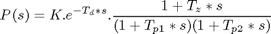
or as an integrating process:
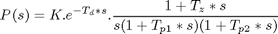
where the user can determine the number of real poles (0, 1, 2 or 3), as well as the presence of a zero in the numerator, the presence of an integrator term (1/s) and the presence of a time delay (Td). In addition, an underdamped (complex) pair of poles may replace the real poles.
Representation of Process Models using IDPROC Objects
IDPROC objects define process models by using the letters P (for process model), D (for time delay), Z (for a zero) and I (for integrator). An integer will denote the number of poles. The models are generated by calling idproc with a string identifier using these letters.
This should be clear from the following examples.
idproc('P1') % transfer function with only one pole (no zeros or delay) idproc('P2DIZ') % model with 2 poles, delay integrator and delay idproc('P0ID') % model with no poles, but an integrator and a delay
Process model with transfer function
Kp
G(s) = ----------
1+Tp1*s
with Kp = NaN
Tp1 = NaN
This model was not estimated from data.
Process model with transfer function
1+Tz*s
G(s) = Kp * ------------------- * exp(-Td*s)
s(1+Tp1*s)(1+Tp2*s)
with Kp = NaN
Tp1 = NaN
Tp2 = NaN
Td = NaN
Tz = NaN
This model was not estimated from data.
Process model with transfer function
Kp
G(s) = --- * exp(-Td*s)
s
with Kp = NaN
Td = NaN
This model was not estimated from data.
Creating an IDPROC Object (using a Simulink® Model as Example)
Consider the system described by the following SIMULINK model:
open_system('iddempr1') set_param('iddempr1/Random Number','seed','0')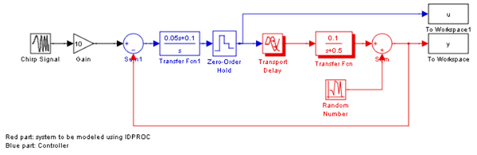
The red part is the system, the blue part is the controller and the reference signal is a swept sinusoid (a chirp signal). The data sampling time is set to 0.5 seconds. As observed, the system is a continuous-time transfer function, and can hence be described using model objects in System Identification Toolbox, such as idss, idpoly or idproc.
Let us describe the system using idpoly and idproc objects. Using idpoly object, the system may be described as:
m0 = idpoly(1,0.1,1,1,[1 0.5],'Ts',0,'InputDelay',1.57,'NoiseVariance',0.01);
The IDPOLY form used above is useful for describing transfer functions of arbitrary orders. Since the system we are considering here is quite simple (one pole and no zeros), and is continuous-time, we may use the simpler IDPROC object to capture its dynamics:
m0p = idproc('p1d','Kp',0.2,'Tp1',2,'Td',1.57) % one pole+delay, with initial values % for gain, pole and delay specified.
Process model with transfer function
Kp
G(s) = ---------- * exp(-Td*s)
1+Tp1*s
with Kp = 0.2
Tp1 = 2
Td = 1.57
This model was not estimated from data.
Estimating Parameters of IDPROC Models
Once a system is described by a model object, such as IDPROC, it may be used for estimation of its parameters using measurement data. As an example, we consider the problem of estimation of parameters of the Simulink model's system (red portion) using simulation data. We begin by acquiring data for estimation:
sim('iddempr1') dat1e = iddata(y,u,0.5); % The IDDATA object for storing measurement data
Let us look at the data:
plot(dat1e)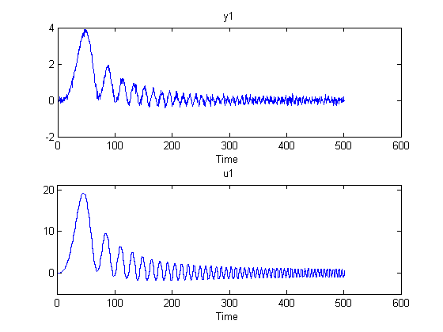
We can estimate the model using pem, by providing the same structure information specified to create IDPROC models. For example, the 1-pole+delay model may be estimated by calling pem as follows:
m1 = pem(dat1e,'p1d'); % estimation of idproc model using data 'dat1e'.
Warning: The 'max' field of the "Td" property has been set to 15 sec (50 samples).
The warning about maximum value of delay suggests that it is necessary to give an upper bound for the delay. That can be done as follows:
m1 = pem(dat1e,'p1d','Td',{'max',2}); %set maximum delay to 2 sec. % % Check the result of estimation: m1
Process model with transfer function
Kp
G(s) = ---------- * exp(-Td*s)
1+Tp1*s
with Kp = 0.20026
Tp1 = 1.9721
Td = 1.5701
Estimated using PEM using SearchMethod = Auto from data set dat1e
Loss function 0.0106352 and FPE 0.0106989
To get information about uncertainties, use
present(m1)
Process model with transfer function
Kp
G(s) = ---------- * exp(-Td*s)
1+Tp1*s
with Kp = 0.20026+-0.00076972
Tp1 = 1.9721+-0.074722
Td = 1.5701+-0.062115
Estimated using PEM using SearchMethod = Auto from data set dat1e
Loss function 0.0106352 and FPE 0.0106989
Created: 29-Jun-2010 23:35:23
Last modified: 29-Jun-2010 23:35:25
The model parameters, K, Tp1 and Td are now shown with one standard deviation uncertainty range.
Computing Time and Frequency Response of IDPROC Models
The model m1 estimated above is an IDPROC model object to which all of the toolbox's model commands can be applied:
step(m1,m0) %step response of models m1 (estimated) and m0 (actual) legend('m1 (estimated parameters)','m0 (known parameters)','location','northwest')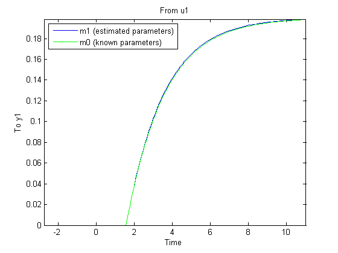
Bode response with confidence region corresponding to 5 s.d. may be computed by doing:
bode(m1,m0,'sd',5,'fill') % 'fill' option fills the uncertainty region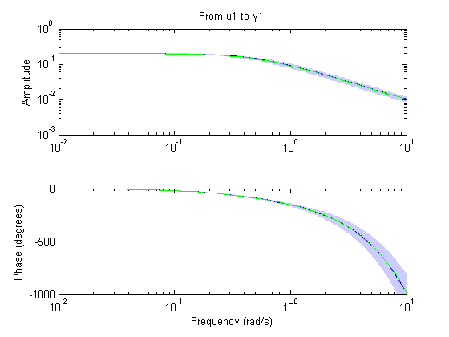
Similarly, the measurement data may be compared to the models outputs using compare as follows:
compare(dat1e,m0,m1)

Other operations such as sim, impulse, c2d are also available, just as they are for other model objects.
bdclose('iddempr1')
Accommodating the Effect of Intersample Behavior in Estimation
It may be important (at least for slow sampling) to consider the intersample behavior of the input data. To illustrate this, let us study the same system as before, but without the sample-and-hold circuit:
open_system('iddempr5')
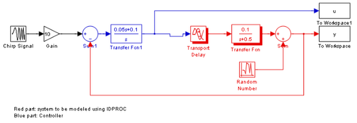 Simulate this system with the same sampling interval:
sim('iddempr5') dat1f = iddata(y,u,0.5); % The IDDATA object for the simulated data
We estimate an IDPROC model using data1f:
m2 = pem(dat1f,'p1d','Td',{'max',2}); m2
Process model with transfer function
Kp
G(s) = ---------- * exp(-Td*s)
1+Tp1*s
with Kp = 0.20038
Tp1 = 2.0102
Td = 1.3101
Estimated using PEM using SearchMethod = Auto from data set dat1f
Loss function 0.0106262 and FPE 0.0106899
This model has a slightly less precise estimate of the delay than the previous one, m1:
[m0p.td.value, m1.td.value, m2.td.value] step(m0,m1,m2) legend('m0 (actual)','m1 (estimated with ZOH)','m2 (estimated without ZOH)','location','southeast')
ans =
1.5700 1.5701 1.3101
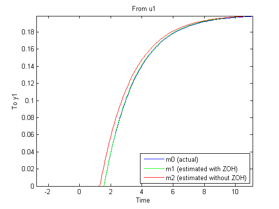 However, by telling the estimation process that the intersample behavior is first-order-hold (an approximation to the true continuous) input, we do better:
dat1f.InterSample = 'foh'; m3 = pem(dat1f,'p1d','Td',{'max',2})
Process model with transfer function
Kp
G(s) = ---------- * exp(-Td*s)
1+Tp1*s
with Kp = 0.20038
Tp1 = 2.0084
Td = 1.5571
Estimated using PEM using SearchMethod = Auto from data set dat1f
Loss function 0.0106368 and FPE 0.0107005
Compare the four models m0 (true) m1 (obtained from zoh input) m2 (obtained for continuous input, with zoh assumption) and m3 (obtained for the same input, but with foh assumption)
[m0p.td.value, m1.td.value, m2.td.value, m3.td.value] compare(dat1e,m0,m1,m2,m3) step(m0,m1,m2,m3) legend('m0','m1','m2','m3') bdclose('iddempr5')
ans =
1.5700 1.5701 1.3101 1.5571
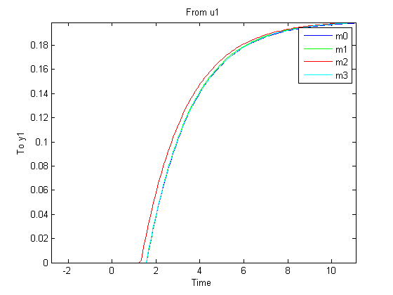 Modeling a System Operating in Closed Loop
Let us now consider a more complex process, with integration, that is operated in closed loop:
open_system('iddempr2')
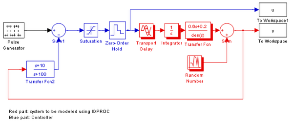 The true system can be represented by:
m0 = idproc('p2zdi','Kp',1,'Tp1',1,'Tp2',5,'Tz',3,'Td',2.2);
The process is controlled by a PD regulator with limited input amplitude and a zero order hold device. The sampling interval is 1 second.
set_param('iddempr2/Random Number','seed','0') sim('iddempr2') dat2 = iddata(y,u,1); % IDDATA object for estimation
Two different simulations are made, the first for estimation and the second one for validation purposes.
set_param('iddempr2/Random Number','seed','13') sim('iddempr2') dat2v = iddata(y,u,1); % IDDATA object for validation purpose
Let us look at the data (estimation and validation).
plot(dat2,dat2v) legend('dat2 (estimation)','dat2v (validation)')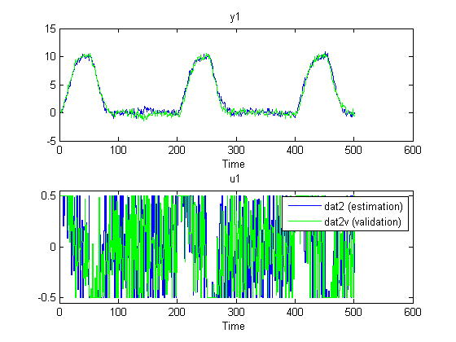
Let us now perform estimation using dat2. To estimate the model use:
m2 = pem(dat2,'p2zdi','td',{'max',5},'cov','none') compare(dat2v,m2,m0) % Gives very good agreement with data bode(m2,m0), legend('m2 (est)','m0 (actual)') impulse(m2,m0,'plot'), legend('m2 (est)','m0 (actual)')
Process model with transfer function
1+Tz*s
G(s) = Kp * ------------------- * exp(-Td*s)
s(1+Tp1*s)(1+Tp2*s)
with Kp = 1.002
Tp1 = 5.7793
Tp2 = 1.2147
Td = 2.1154
Tz = 3.7733
Estimated using PEM using SearchMethod = Auto from data set dat2
Loss function 0.101909 and FPE 0.103943
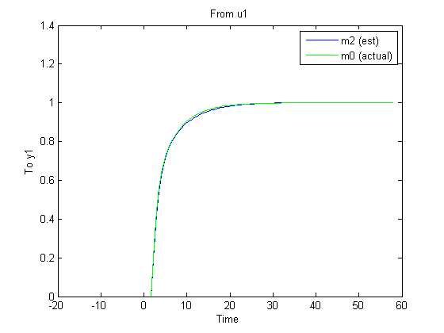 Compare also with the parameters of the true system:
present(m2) m0 [m0.par m2.par] % zero estimation is not good, although it does not seem % to affect quality of the response plots
Process model with transfer function
1+Tz*s
G(s) = Kp * ------------------- * exp(-Td*s)
s(1+Tp1*s)(1+Tp2*s)
with Kp = 1.002
Tp1 = 5.7793
Tp2 = 1.2147
Td = 2.1154
Tz = 3.7733
Estimated using PEM using SearchMethod = Auto from data set dat2
Loss function 0.101909 and FPE 0.103943
Created: 29-Jun-2010 23:35:41
Last modified: 29-Jun-2010 23:35:46
Process model with transfer function
1+Tz*s
G(s) = Kp * ------------------- * exp(-Td*s)
s(1+Tp1*s)(1+Tp2*s)
with Kp = 1
Tp1 = 1
Tp2 = 5
Td = 2.2
Tz = 3
This model was not estimated from data.
ans =
1.0000 1.0020
1.0000 5.7793
5.0000 1.2147
2.2000 2.1154
3.0000 3.7733
A word of caution. Identification of several real time constants may sometimes be an ill-conditioned problem, especially if the data are collected in closed loop.
To illustrate this, let us estimate a model based on the validation data:
m2v = pem(dat2v,'p2diz','td',{'max',5})
Process model with transfer function
1+Tz*s
G(s) = Kp * ------------------- * exp(-Td*s)
s(1+Tp1*s)(1+Tp2*s)
with Kp = 1.0147
Tp1 = 61.608
Tp2 = 3.4229
Td = 1.6736
Tz = 60.734
Estimated using PEM using SearchMethod = Auto from data set dat2v
Loss function 0.100105 and FPE 0.102103
This model has much worse parameter values. On the other hand, it performs nearly identically to the true system m0 when tested on the other data set dat2:
compare(dat2,m0,m2,m2v)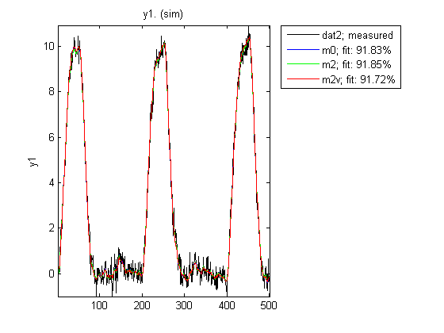
Fixing Known Parameters During Estimation
Suppose we know from other sources that one time constant is 1:
m2v.Tp1 = 1;
m2v.Tp1.status='fix';
We can fix this value, while estimating the other parameters by: ('display','full' means full info about the iterations to the screen)
m2v = pem(dat2v,m2v,'cov','none','display','full') %cov='none' would expedite the estimation %
--------------------------------------------------------------------------------
Criterion: Determinant minimization
Scheme: Nonlinear least squares with automatically chosen line search method
--------------------------------------------------------------------------------
Initial Estimate:
Current cost: 148.272
Parameters:
Kp : 1.015
Tp1 : 1
Tp2 : 3.423
Td : 1.674
Tz : 60.73
Iteration 1:
Current cost: 0.108585 Previous cost: 148.272
Param New value Prev. value Direction
Kp : 1.005 1.015 -0.009263
Tp1 : 1 1 0
Tp2 : 3.392 3.423 -0.03049
Td : 1.692 1.674 0.01839
Tz : 1.405 60.73 -59.33
Step-size: 59.3292
First-order optimality: 249.931
Expected improvement: 99.9341%
Achieved improvement: 99.9268%
Iteration 2:
Current cost: 0.0983852 Previous cost: 0.108585
Param New value Prev. value Direction
Kp : 1.007 1.005 0.001836
Tp1 : 1 1 0
Tp2 : 4.809 3.392 1.417
Td : 2.638 1.692 0.9462
Tz : 3.202 1.405 1.797
Step-size: 2.47663
First-order optimality: 124.879
Expected improvement: 10.4272%
Achieved improvement: 9.39332%
Iteration 3:
Current cost: 0.0972376 Previous cost: 0.0983852
Param New value Prev. value Direction
Kp : 1.009 1.007 0.001684
Tp1 : 1 1 0
Tp2 : 4.616 4.809 -0.1935
Td : 2.159 2.638 -0.4792
Tz : 2.525 3.202 -0.6772
Step-size: 0.851898
First-order optimality: 35.7589
Expected improvement: 1.30555%
Achieved improvement: 1.16641%
Iteration 4:
Current cost: 0.0971525 Previous cost: 0.0972376
Param New value Prev. value Direction
Kp : 1.01 1.009 0.000761
Tp1 : 1 1 0
Tp2 : 5.018 4.616 0.402
Td : 2.253 2.159 0.09399
Tz : 3.004 2.525 0.4793
Step-size: 0.632633
First-order optimality: 8.91676
Expected improvement: 0.103371%
Achieved improvement: 0.08753%
Iteration 5:
Current cost: 0.0971502 Previous cost: 0.0971525
Param New value Prev. value Direction
Kp : 1.01 1.01 -0.0001706
Tp1 : 1 1 0
Tp2 : 4.974 5.018 -0.04419
Td : 2.234 2.253 -0.01878
Tz : 2.944 3.004 -0.05984
Step-size: 0.0767257
First-order optimality: 0.166292
Expected improvement: 0.00271023%
Achieved improvement: 0.00234559%
Estimation complete.
Last improvement: 0.00234559
First-order optimality (largest slope): 0.166292
Final cost: 0.0971502
Process model with transfer function
1+Tz*s
G(s) = Kp * ------------------- * exp(-Td*s)
s(1+Tp1*s)(1+Tp2*s)
with Kp = 1.0095
Tp1 = 1
Tp2 = 4.9737
Td = 2.2342
Tz = 2.9445
Estimated using PEM using SearchMethod = Auto from data set dat2v
Loss function 0.0983398 and FPE 0.0999101
As observed, fixing Tp1 to its known value dramatically improves the estimates of the remaining parameters in model m2v.
This also indicates that simple approximation should do well on the data:
m1x = pem(dat2v,'p2d','Td',{'max',2}) compare(dat2,m0,m2,m2v,m1x)
Process model with transfer function
Kp
G(s) = ------------------ * exp(-Td*s)
(1+Tp1*s)(1+Tp2*s)
with Kp = 37452
Tp1 = 37250
Tp2 = 3.6172
Td = 1.5758
Estimated using PEM using SearchMethod = Auto from data set dat2v
Loss function 0.100349 and FPE 0.101951
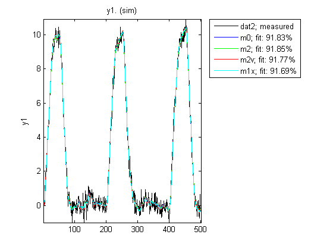 Thus, the simpler model is able to estimate system output pretty well. However, m1x does not contain any integration, so the open loop long time range behavior will be quite different:
step(m0,m2,m2v,m1x) legend('m0','m2','m2v','m1x') bdclose('iddempr2')

Additional Information
For more information on identification of dynamic systems with System Identification Toolbox visit the System Identification Toolbox product information page.